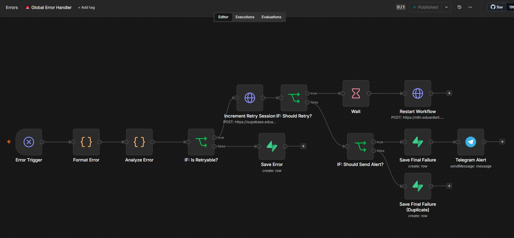
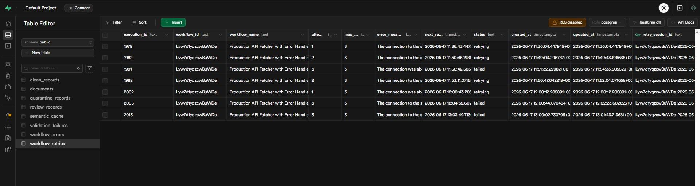
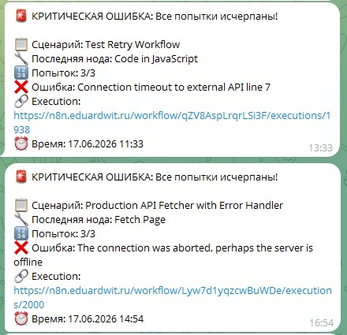

Система с атомарным PostgreSQL RPC, exponential backoff с jitter, circuit breaker и дедупликацией алертов. Zero race conditions, zero duplicate alerts, 100% observability.
Production-сценарии периодически падали из-за внешних факторов: таймауты API, rate limit'ы, сетевые сбои. Каждая ошибка требовала ручного вмешательства. При параллельных запусках возникали race conditions и дублирующие алерты.
Workflow падали без оповещений. Команды обнаруживали проблемы спустя часы.
Каждый упавший сценарий перезапускался вручную — не масштабируемая рутина.
Параллельные Error Handler'ы создавали дубликаты записей и множественные алерты.
Не было единой картины: какие workflow падают, какие ошибки повторяются.
Каждая retry-сессия — атомарная операция через PostgreSQL RPC-функцию. Никаких race conditions: UPSERT + инкремент выполняются в одной транзакции.

Классические паттерны из мира распределённых систем, адаптированные под low-code.
Атомарная функция increment_retry_session() выполняет SELECT + UPDATE + инкремент в
одной транзакции. Zero race conditions даже при 100+ параллельных запросах.
Флаг should_send_alert через PostgreSQL FOUND гарантирует: только
первый Handler, достигший лимита, отправит Telegram-алерт. Остальные — просто логируют.
Детерминированный retry_session_id = workflow_id-YYYY-MM-DD-HH-MM-hash группирует
одинаковые ошибки в одну сессию. FNV-1a hash — чистый JS, без модулей.
Растущие задержки (30с → 60с → 120с) плюс random(0-10с) защищают восстанавливающийся сервис от thundering herd.
Вся логика retry-сессии выполняется в одной SQL-функции. Никаких промежуточных SELECT/INSERT — только атомарный UPSERT.

workflow_retries: одна запись на сессию, attempt_number растёт
атомарноШесть этапов. На каждом решалась конкретная инженерная проблема. Финальный результат: zero race conditions, zero duplicate alerts.
n8n, Supabase, Grafana на VPS через Dokploy. Traefik + Let's Encrypt SSL.
Централизованный обработчик ошибок с классификацией retryable/non-retryable.
PostgreSQL UPSERT с инкрементом attempt_number в одной транзакции. Zero race conditions.
Детерминированный session_id группирует одинаковые ошибки. Чистый JS, без модулей.
PostgreSQL FOUND гарантирует: только первый Handler отправит алерт. Zero duplicate
alerts.
5 параллельных webhook'ов → одна запись с attempt:3 → один Telegram-алерт. Production-ready.

Технические решения, которые превратили прототип в надёжную систему.
Одна RPC-функция с UPSERT надёжнее, чем SELECT → Calculate → INSERT. PostgreSQL гарантирует сериализацию.
Переменная FOUND после UPDATE возвращает true, если строка была изменена. Идеально
для дедупликации алертов.
Детерминированный hash на чистом JS без модулей. Быстрее, безопаснее, работает в n8n task runner.
Более точная группировка: разные сбои в одном часе не сливаются в одну сессию.
Передаём флаг из SQL в n8n → IF-нода решает, слать алерт или нет. Чистая архитектура.
Только 5 параллельных запросов покажут, есть ли race conditions. Без этого — не production.
Только open-source. Полный контроль над данными, нулевые ежемесячные платежи.
Оркестрация workflow
PostgreSQL + PostgREST RPC
Мониторинг и дашборды
Real-time алерты
Платформа деплоя
Reverse proxy + SSL
Контейнеризация
Self-hosted инфраструктура
Соберу production-grade self-healing платформу под ваши workflow за 1-2 недели. С полной документацией, дашбордами и обучением команды.
Обсудить проект →